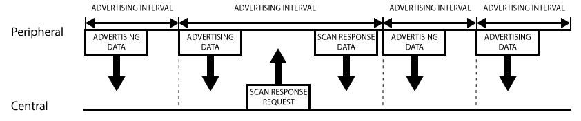

The Basics of Bluetooth and BLE
A Brief History of BLE
Contrary to popular belief Bluetooth and Bluetooth Low Energy (BLE) are not the same protocol. Although there is much overlap between the two, BLE started at Nokia in 2001 under the name “Wibree” and in 2010 it was rolled into the release of Bluetooth 4.0 after negotiations between Nokia and the Bluetooth Special Interest Group. In 2017 Bluetooth 5 was announced which added increased range to the version of BLE that was released alongside it.
BLE has many everyday uses, mainly connecting mobile phones and tablets to peripherals such as personal healthcare devices, wireless keyboards and mice and headphones or speakers. Alongside personal use BLEhas many industrial applications such as creating mesh networks, linking sensors and monitors and user data services.
Advertising, GAP and GATT
Advertising and connecting in BLE is handled through the GAP or the Generic Access Profile standard. There are two main devices that are required for a successful connection, the Peripheral device and the Central device. The peripheral device is usually a small, low powered device (like the devices listed in the history section) that connect to the central device. The central device is usually a tablet, phone or device that has much more computing power and memory. Each broadcast a payload that’s 31 bytes, but the 2 most important payloads are the Advertising Data payload and the Scan Response payload. Both of which are broadcast by the peripheral device to let the central device know it’s in range. The first sent is the Advertising Data payload which can be sufficient, but the central device can request a Scan Response payload as well for additional information about the device looking to connect.
Below is a visualization of the GAP process:
After the connection is established with GAP, GATT or the Generic ATTribute Profile takes over in order to transfer data between the peripheral and central devices. Once a device is connected and in the GATT stage, the peripheral is limited to transferring data to that one central device. A central device may have multiple peripherals connected to it however. Once in the GATT stage, the peripheral is now known as the GATT server and the central device is known as the GATT client. At this point all transactions are started by the GATT client, and receive a response from the GATT server. However, it’s the server that sets the connection time interval and at this interval, the client will try to reconnect to the server to see if new data has been created.
Below is a visualization of the GATT connection process:
There are three important objects in each GATT transaction - Profiles, Services and Characteristics. These objects are nested within each other, where the characteristics are nested in the services and then nested in the Profile. The characteristics are the lowest level of the transaction and are the primary point of interaction between the client and server. There are a multitude of already defined characteristic ID’s that are universal among BLE devices, however, custom characteristic ID’s can be written so a specific client and server can only pair with each other.
Below is a visualization of a Profile Packet:
 The Sniffing Process >>>
The Sniffing Process >>>